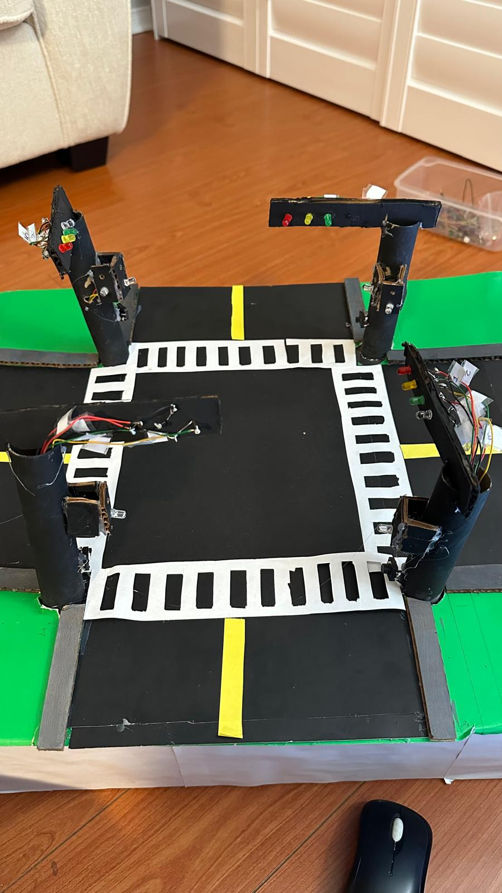

TEJ Traffic Light
Final Image
Explanation of the Project
Our task for this project was to create a project using all of the skills and knowledge from the last 6 months. The project we chose to make was the traffic light, using a Raspberry Pi 4b to code it. My logic behind this project was to use threads, a module in Python, to run tasks concurrently. Also to use the time module to delay the LEDs in the sequence.
- If the pedestrian button is pressed, it starts a sequence with the pedestrian LED on, then reverts to the original sequence without the pedestrian lights.
- Once the pedestrian LED is on, it starts the other pedestrian light. This resembles a real stoplight.
- There is also a left turn signal that activates every time, resembling real-life traffic lights.
- It also prints the color it is on, inside the terminal, so you can also keep track of it there.
This project may look simple; however, the timing of the sequences is quite complex. I utilized red pedestrian lights for my pedestrian lights, however with constraints regarding the amount of LEDs, I could not include it in my physical modle. However this functionality is included inside my code.
To control the LEDs, I used GPIOZero, which is a simpler form of RPI.GPIO.
Inputs
My inputs were 4 push buttons on the poles, acting as pedestrian buttons.
How does the code work
My code works mainly off of multithreading, a module that lets me call and run functions concurrently with the main code. My main usages of multithreading are with the pedestrian inputs and the red lights. When the main traffic light (with the left turn signal) turns red, the button starts to accept an input, which calls another function, called Pedestrian Run 2, which has the pedestrian turn signals. To synchronize this function with the main sequence, I utilize another function called after crossing. Another usage of multithreading in my code is with the left-turn lights, which run concurrently with the green lights.
Another feature of multithreading I utilized is the usage of flags. Flags are basically the same as variables; however, they only have 2 options: true or false. When a flag is set, the value is set to true, and we can manipulate this feature to wait for some function to finish. I utilized this feature to wait for the pedestrian light sequence to finish to restart the normal traffic sequence. I also utilized it to read if the pedestrian buttons had been pressed or not. This is the basics of my code.
Improvements
With this project I had many improvements that I can name after completing it. The main one would have to be adding sensors and functionality to the projects. Over the last 2 weeks, I had been busy debugging my original code, so that I could not use the ultrasonic distance sensor to sense a car for the red light. I had tried to make the code for it; however, with my code being filled with errors and bugs, I did not have any time left. Next time I would also improve my wiring with more organization. At the start, my wiring was not spread out, which created a lot of confusion around whether I was plugging the wires into the right place. This caused me to come to class on Monday with an unfinished project. However, when I went home that day, I redid all of the wiring and made it more organized. To improve this further, I would like to put the wiring of the pedestrian light in the part of the terminal that is closer to me. Which would let me complete the project earlier. Finally, I would have loved to add red pedestrian lights to my physical project. In my code, there is the functionality of the pedestrian red light; however, due to material restrictions, I was limited to only enough wire for the white pedestrian lights. In the future I would bring enough material to adequately finish my project.
Bare Circuit
Final Working Video
Python Code
Python
import time
import threading
from gpiozero import LED, Button
input_received = threading.Event()
pedestrian_active = threading.Event()
normal_run_pause = threading.Event()
leftturndone = threading.Event()
led = LED(17)
gled = LED(27)
yled = LED(22)
rled = LED(23)
gled2 = LED(24)
yled2 = LED(25)
pled1 = LED(16)
pled1red = LED(26)
pled2 = LED(15)
pled2red = LED(14)
leftturn1 = LED(6)
crossbutton = Button(5)
def leftturn():
print("Color 1: Left Turn On")
leftturn1.on()
time.sleep(2)
print("Color 1: Left Turn Off")
leftturn1.off()
def leftturngreen():
print("\nColor: Green")
gled.on()
print("\nPedestrian 1: On")
time.sleep(5)
gled.off()
print("Pedestrian 1: Off")
def leftturn2():
print("Color 1: Left Turn On")
leftturn1.on()
time.sleep(2)
print("Color 1: Left Turn Off")
leftturn1.off()
leftturndone.set()
def leftturngreen2():
pled1red.off()
print("\nColor: Green")
gled.on()
leftturndone.wait()
pled1.on()
print("\nPedestrian 1: On")
time.sleep(3)
gled.off()
print("Pedestrian 1: Off")
pled1.off()
leftturndone.clear()
pled1red.on()
def aftercrossing2():
print("Color 2: Green")
gled2.on()
print("Color 2: Pedestrian On")
pled2red.off()
pled2.on()
time.sleep(5)
pled2.off()
pled2red.on()
gled2.off()
print("Color 2: Yellow")
yled2.on()
time.sleep(2)
yled2.off()
led.off()
def cross_input():
while True:
if crossbutton.is_pressed:
input_received.set() # Set the event to signal input has been received)
print("\nCrossing Signal Recieved")
def red_light():
print("\nColor: Red")
pled2.on()
led.on()
time.sleep(8)
led.off()
pled2.off()
def normalrun2():
while True:
pled1red.on()
pled2red.on()
print("\nColor 2: Red")
rled.on()
time.sleep(8)
rled.off()
# Wait if pedestrian sequence is active
normal_run_pause.wait()
# Skip "Color 2: Green" if pedestrian lights were just active
if pedestrian_active.is_set():
print("\nSkipping Color 2: Green due to pedestrian sequence")
continue
else:
print("\nColor 2: Green")
gled2.on()
time.sleep(5)
gled2.off()
# Skip the green phase entirely
print("\nColor 2: Yellow")
yled2.on()
time.sleep(2)
yled2.off()
break
def pedestrianrun2():
while True:
pedestrian_active.set() # Signal pedestrian lights are active
normal_run_pause.clear() # Pause normalrun2
t1_2 = threading.Thread(target=aftercrossing2, daemon=True)
t1_3 = threading.Thread(target=leftturn2, daemon=True)
t1_4 = threading.Thread(target=leftturngreen2, daemon=True)
print("\Color 2: Red")
rled.on()
t1_4.start()
t1_3.start()
t1_4.join()
print("\nColor 2: Yellow")
yled.on()
time.sleep(2)
yled.off()
rled.off()
led.on()
t1_2.start()
t1_2.join()
t1_3.join()
break
pedestrian_active.clear() # Reset pedestrian active signal
normal_run_pause.set() # Resume normalrun2
def normalrun():
while True:
# Creating threads
t6 = threading.Thread(target=leftturn, daemon=True)
t5 = threading.Thread(target=leftturngreen, daemon=True)
t4 = threading.Thread(target=pedestrianrun2, daemon=True)
t3 = threading.Thread(target=normalrun2, daemon=True)
t2 = threading.Thread(target=red_light, daemon=True)
t1 = threading.Thread(target=cross_input, daemon=True)
# Start the second traffic light thread
normal_run_pause.set() # Ensure normalrun2 is active initially
t3.start()
pled1red.on()
pled2red.on()
# Green light for pedestrian 1r
t5.start()
t6.start()
t5.join()
# Yellow light
print("\nColor: Yellow")
yled.on()
time.sleep(2)
yled.off()
# Start red light and cross input threads
t2.start()
t1.start()
# Wait for input with a timeout of 8 seconds
t1.join(timeout=8)
# Check if input was received within the timeout
if input_received.is_set():
print("\nActive")
t4.start() # Start pedestrian sequence
t4.join() # Wait for pedestrian sequence to complete
input_received.clear() # Reset the event
elif t1.is_alive():
print("\nNo")
input_received.clear() # Reset the event if no input was received
# Ensure red light and second traffic light threads complete
t2.join()
t3.join()
t6.join()
normalrun()